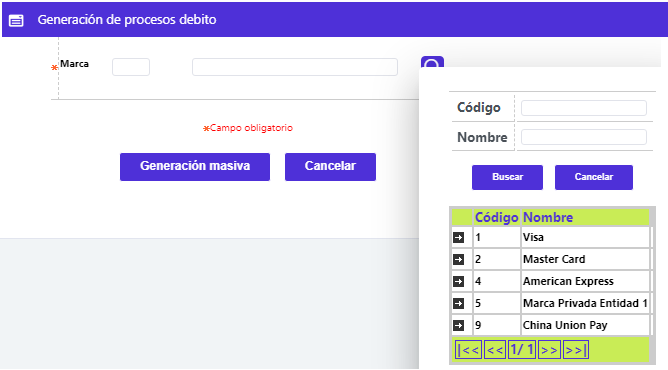

Ejecución de procesos
La funcionalidad provista por esta opción permite dar curso a las solicitudes masivas requeridas por las oficinas, al generar las inserciones de los registros en las tablas correspondientes. Si la ejecución es exitosa, dependiendo de si los plásticos corresponden a tarjetas sin chip, se deberá evidenciar el incremento del número de registros en la opción Plástico a realzar o en su defecto, los plásticos corresponden a tarjetas con chip, caso en el cual, se deberá evidenciar el incremento del número de registros en la opción Realce chip.

|
Marca |
Campo que posee lista de valores poblada a través de la opción de Franquicias, habilitadas para la entidad, de los parámetros de negocio del Núcleo, de la que debe indicarse a cuál de ellas corresponden los plásticos solicitados y a generar. |
|
Generación masiva |
Botón especial que por defecto aparece activo y que permite indicarle a los programas invocados, que corresponde a la solicitud masiva de plásticos realizada por oficina o sucursal de la entidad. |